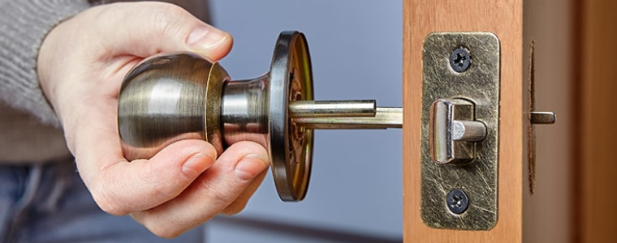

Blog4U – Recent Posts

How Does A Locksmith Change Door Locks?
When a locksmith is called to change the locks on a door at home,
there are numerous things to consider. First, they’ll establish the situation: is this a new
lock or an old one?
Read more